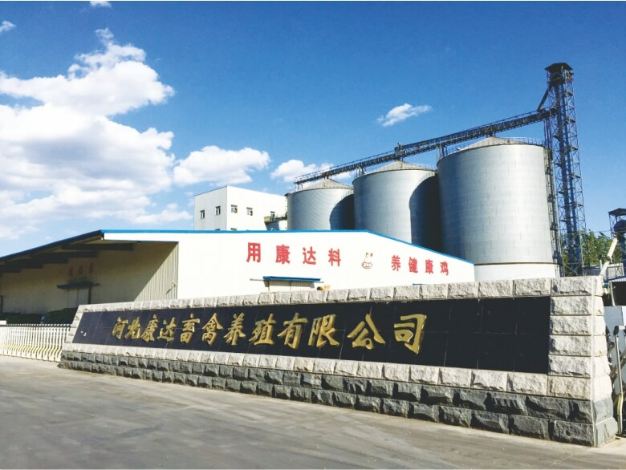
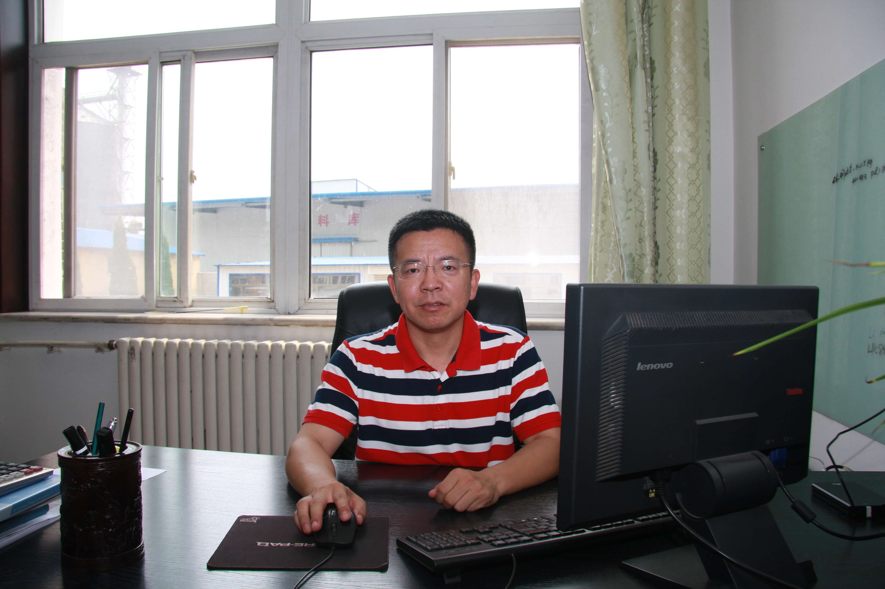
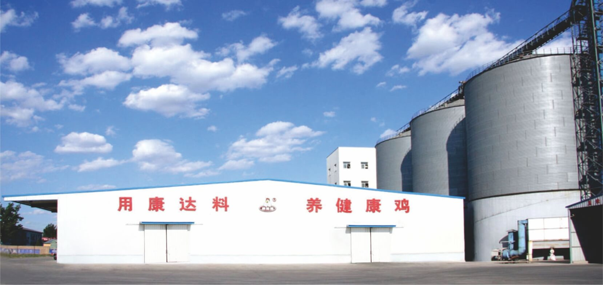
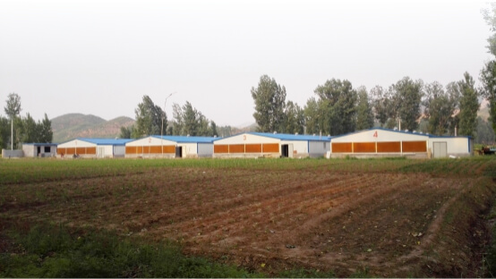
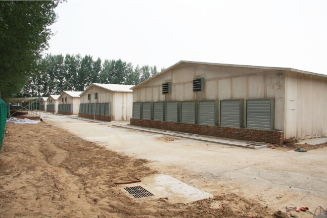
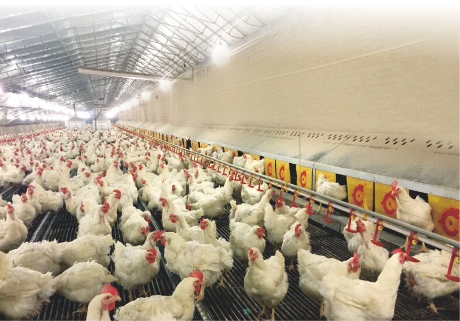
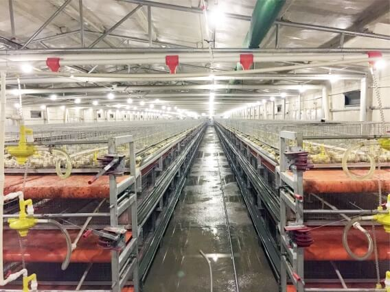
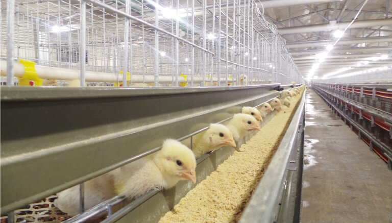

它堪称“财神”企业，只因为你不敢想的它敢做！
它，被称为是带动当地农民增收致富的“财神”企业，走到哪儿，富到哪儿；
它，靠5000万的注册资金，十三年的时间，建立起“龙头企业+规模农场+科技园区”的发展规模；
它，曾经五次被评为国家级、省级行业先进企业，产品远销京、津、冀、沪。
它就是“养殖宝·寻找中国最美养殖场”第十期的重磅嘉宾——河北康达畜禽养殖有限公司。
河北康达畜禽养殖有限公司2003年3月注册成立，十几年来，公司通过不断探索开拓，建立“公司+银行+基地”的新型肉鸡养殖合作模式和“六统一”的管理运作模式，实现了集饲料加工、种鸡饲养、肉鸡孵化养殖、屠宰加工、冷藏配送及销售为一体的现代肉鸡全产业链经营模式。
 河北康达畜禽养殖有限公司本期最美养殖场，养殖宝专程联系到该公司负责业务员培训及自养场和大客户鸡场管理的养殖事业部总经理马学军，他为我们分享了康达畜禽养殖公司的运营模式和成功经验。
 养殖事业部总经理马学军一、“龙头企业+规模农场（农户）”产业模式稳固企业基础
康达畜禽养殖公司与养殖户签订保价合同，由龙头企业为养殖户统一饲养成本，并全程免费提供技术指导，与肉鸡养殖户建立契约式订单生产模式。公司现有业务范围广阔，年出栏肉鸡3000万只，并已建成廊坊及周边县市最大的标准化肉鸡养殖基地。
 二、“金融机构+龙头企业+规模农场”融资模式助力业务拓展
为促进当地及周边县市肉鸡产业集约化、规模化发展进程，升级改造养殖设备，缓解农户生产资金不足问题，公司推出“家庭农场百万收入”计划。公司与当地合作社、银行等金融机构合作，建立“龙头企业+金融+养殖户”的金融支撑体系，帮助广大养殖户引进资金，极大地带动了周边农户自主创业热情和信心。
三、多地协同发展模式打造规模产业基地
2013年，公司相应党的号召，到保定阜平及衡水安平等地进行产业对接，带去了成熟的养殖模式、资金及技术等支持，并先后在各地成立公司，为农户提供服务支持。在公司的带动下，阜平、安平、饶阳等地实现了跨越式发展。并且，公司计划在三年内将这些地区打造成各培育年出栏肉鸡3000万只的肉鸡产业化养殖基地，建设集群式、可持续发展的食品工业园，打造华北地区白羽肉鸡生产、加工及其配套产业示范基地。
 四、现代农业（科技）园区建设推动产业链形成
公司依托现有基础，围绕建设集生产、示范、休闲等多功能于一体的现代农业（科技）示范园区，园区核心区总占地面积3660亩。园区以加快农业科技研发和推广步伐、打造环首都现代农业示范带为总体目标，力争建成集农业新技术研发、示范、推广、绿色农产品生产和精深加工销售于一体的农业科技基地。
五、坚持规范生产，打开广阔市场
河北康达畜禽养殖有限公司本着“健康为基，达人达己”的核心理念，致力现代肉鸡产业发展。为从源头上强化食品安全意识、加强农业投入品的管控，在提高企业产品检验能力的同时，公司引导养殖户完善生产记录和养殖备案手续，将现有养殖户提升为肉鸡养殖“农场主”，形成“公司（法律主体）+养殖场（法律主体）”的生产模式，从根本上提升养殖户的食品安全意识，将食品安全风险降到最低。
经过马学军总经理的介绍，养殖宝总结康达畜禽养殖有限公司最直观的特点是“大”。这不仅是公司规模大、业务覆盖大，更是经营视角大。站在行业的角度，创造性地联合金融机构，以建立产业链条的视野布局企业发展，协助合作伙伴、扶持各地农户，以成就别人为宗旨，最终成就自己。